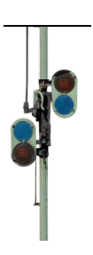
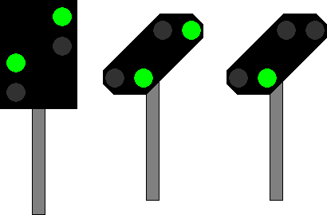

(1)
Bedeutung
Fahrt erwarten.
Signalbuch-Online
Tageszeichen:
Die runde Scheibe liegt waagerecht. Wo ein Flügel vorhanden ist, zeigt er senkrecht nach unten.

Nachtzeichen:
Zwei grüne Lichter nach rechts steigend.
An Vorsignalen im Geltungsbereich der DV 301, die nicht an Hauptsignalen stehen, kann bis auf Weiteres nur ein grünes Licht gezeigt werden.

Zwei grüne Lichter nach rechts steigend.
An Vorsignalen im Geltungsbereich der DV 301, die nicht an Hauptsignale stehen, kann bis auf Weiteres nur ein grünes Licht gezeigt werden.
